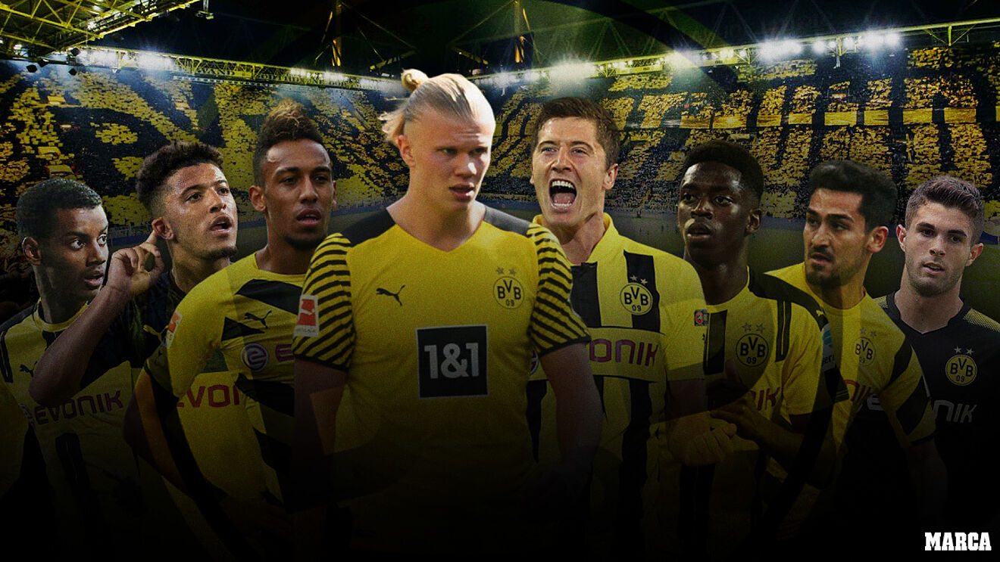

Borussia Dortmund

Resumen y goles del Hannover 96 vs. Borussia Dortmund, 1/16 de Copa Alemana
Victoria del Dortmund de Terzic con gol de Bellingham para sellar el pase a octavos de final de la DFB Pokal, la competición copera de Alemania (0-2)
2-0: Bellingham sella el pase del Dortmund a octavos
La joven estrella inglesa logró de penalti el segundo gol del conjunto de Terzic ante el Hannover
Bayern y Dortmund sellan su billete a octavos de Copa
El delantero camerunés Eric Maxim Choupo-Moting reivindicó su protagonismo con dos goles y una asistencia que impulsaron al Bayern a la remontada en el WWK Arena ante el Augsburgo (2-5) y su clasificación.